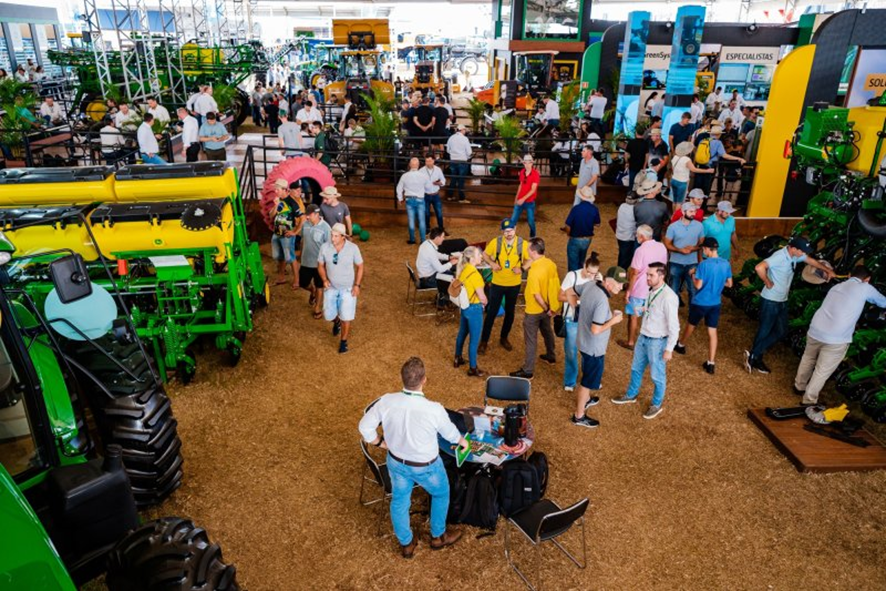
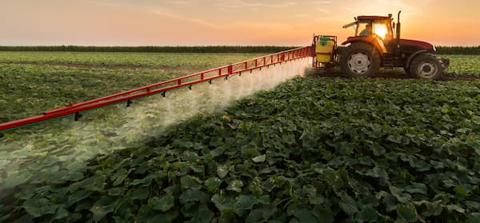
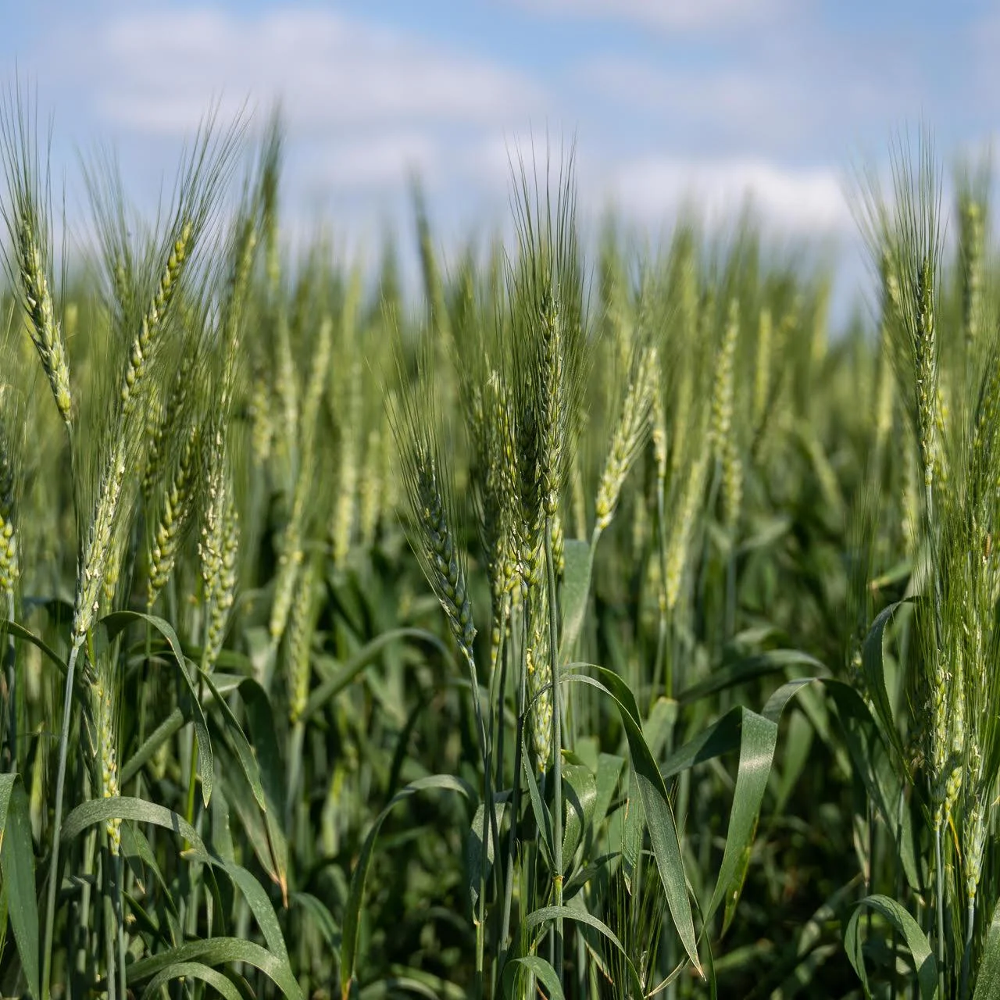

Uma parceria de trocas, tradições e tecnologia
O campo e a cidade, embora diferentes em seus modos de vida, estão cada vez mais conectados. Enquanto o meio urbano oferece inovações tecnológicas, o meio rural abastece a cidade com alimentos e matérias-primas. Essa parceria vai além da economia, mas também culturas e suas tradições. A tecnologia aproxima ainda mais esses mundos, facilitando a conexão.

Festas e tradições que aproximam
Nas cidades e no campo, é comum a realização de festas e comemorações que valorizam os produtores rurais. Um ótimo exemplo é a festa do pinhão, muito popular em diversas regiões. Esses eventos celebram o trabalho do campo e promovem o encontro entre moradores das cidades e agricultores.
A tecnologia como ponte entre os mundos
A cidade também contribui muito para o campo. Empresas urbanas produzem máquinas e ferramentas agrícolas modernas, como: colheitadeiras, tratores e irrigadores automáticos, que tornam o trabalho no campo mais eficiente. Além disso, os centros urbanos oferecem serviços essenciais, como hospitais e mercado, melhorando a vida de quem mora na zona rural.
Feiras e exposições: o encontro do saber
Nas tradicionais feiras de exposições agropecuárias, produtores rurais apresentam seus animais, plantações e inovações tecnológicas. Ao mesmo tempo, as empresas do setor urbano aproveitam para apresentar e vender equipamentos e máquinas cada vez mais modernas.
.webp)
União que fortalece a economia
Essa troca constante de saberes, produtos e serviços fortalece a economia local e nacional. Mais do que isso: ela aproxima as pessoas e cria uma rede de apoio entre quem vive no campo e quem vive na cidade.
Campo e cidade não são opostos - são complementares. E juntos, constroem um Brasil mais forte, tecnológico e culturamente rico.